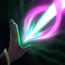

起手裝備
 幽魂之鐮
幽魂之鐮
將有普攻主力的預設順序改熾灼→和諧→希利亞→贖罪，對照7.3b；沒有合適普攻受益者時，以流水取代熾灼，不強迫先出攻速增益。


五件成裝與鞋子分開列示；起手與核心是購買路線，不是額外佔用的成裝欄位。鞋子完成時機仍依對線壓力與回城金錢調整。


艾莉、生命之泉、骨甲、甦醒、卓越保留，對照7.3b且與先護盾後消耗的輔助定位一致。


保留閃現＋治療照顧雙人線；只有選角改虛弱、點燃或光盾時才執行相關連招步驟，原條件提示保留。
加點優先：E > Q > W
保留E > Q > W，逐級表與7.3b輔助分頁一致；大絕仍在5、9、13級，基本技能各四點。
施放三次技能後，下一個基礎技能會獲得真言強化，提升傷害、控制或護盾效果。

射出靈能彈，命中後造成範圍魔法傷害與緩速；真言強化後會形成延遲二段爆炸。
連結附近最多兩名敵方英雄並造成傷害、揭露位置；維持連線後定身。真言強化會在被連結目標間形成額外鏈結，限制更多接觸鏈結的敵人。
替友方英雄提供護盾與跑速。真言強化提高效果，目標周圍出現圓環，首位進入圓環的另一名友方英雄獲得同樣護盾與加速；不是無限制全隊群盾。
在指定位置形成靈能環並立即取得真言。短暫延遲後造成範圍魔法傷害，外環的敵人被推向中心；中心目標不是全部再拉一次。
R立即給真言，接Q會先吃掉強化，因此反開連招改R→強化E→Q→W；E只額外給圈內首位友軍，R外環才向內推。 鎖鏈定身由持續維持連結自動觸發，連招最後一步改為維持距離，不是再次施放W。
強化1技命中 → 利用緩速調整位置 → 普攻補傷害 → 3技護盾撤退
確定被動強化已準備完成後再施放一技，二段爆炸需要敵人仍停留在範圍內。
2技建立鎖鏈 → 3技加速跟住目標 → 1技緩速限制逃跑 → 鎖鏈完成定身 → 虛弱敵方主力（改帶時才使用）
三技跑速用來保持連線，一技放在敵人退路。真言強化二技可同時限制更多目標。 本頁預設為閃現＋治療；本連招的虛弱僅限選角時將治療改帶虛弱且技能可用時使用。維持預設配置時略過該步。
4技封鎖進場並取得真言 → 立即強化3技護盾主力 → 1技緩速追擊者 → 2技維持鏈結 → 靠攏盾環後拉開
R後先E才會強化護盾；另一友軍須進入主目標圓環。R只將外環敵人向內推，不保證整區全控。
R立即給真言；想保護主力就接E，先接Q會把強化用於傷害。
除指定目標外，只有首位進入其圓環的另一友軍獲得額外盾，不要把站位分散的全隊當作都能吃到。
W需要維持距離，E加速可協助；R外環向內推，配合緩速和窄口提高命中。
利用輪迴怒火的範圍傷害與緩速同步消耗敵人，但不要過度推線讓自己失去安全距離。持續追蹤真言符印計數：需要壓血時把強化留給一技，遭遇強開或準備追擊時則保留給靈能啟示，保護主目標與首位進入盾環的另一友軍。特化鏈結連上後用三技加速跟住目標，避免鎖鏈被拉斷。
有普攻主力時依序熾灼魔器 → 和諧回音 → 希利亞的迴響 → 贖罪神石，任務裝保留第五格；先用護盾觸發增益，再以Q儲存希利亞。法術主力則把熾灼改流水，別為固定表硬買攻速增益。
團戰站在隊伍中央，根據威脅分配真言：敵人尚未進場時可用強化一技消耗，刺客或坦克衝入時優先強化三技保護主力及盾環內另一友軍。大絕適合反開、打斷敵方陣型或把外環目標推向火力中心；二技則留給需要長時間限制的突進者。
鉤子和指定進場會壓縮拉扯空間，E留作脫離而非空耗；搭凱特琳、燼或寇格魔可用盾加速維持安全射程。
對局名單是機制與分路判斷，不代表固定勝率；需同時看雙方熟練度、兵線與陣容。
鉤子和指定進場會壓縮拉扯空間，E留作脫離而非空耗；搭凱特琳、燼或寇格魔可用盾加速維持安全射程。
威脅名單是攻略與技能互動，實際需看雙方射手、技能冷卻和兵線；不代表台服勝率排名。
完整成裝為四件購買裝＋一件進化任務裝；鞋獨立。以下以本頁預設為基準，變體需重新檢查同名裝及功能缺口。
依陣容
觸發：射手常因可解除的控制失去輸出窗口。
熾灼魔器 → 米凱的祝福
射手常因可解除的控制失去輸出窗口。
米凱祝福用於可解除效果，不能假定解除所有控制；先保施放者安全。
換掉原功能前先確認隊友能補足；替換不是第六件成裝。
依陣容
觸發：主要需要保護的是法術輸出，普攻攻速收益低。
熾灼魔器 → 流水之杖
主要需要保護的是法術輸出，普攻攻速收益低。
流水支援技能循環，若原四件已含流水則保留；不宣稱熾灼與流水每局都要一起買。
換掉原功能前先確認隊友能補足；替換不是第六件成裝。
依陣容
觸發：多人血線在物件戰一起下降，且可預判治療落點。
預設已包含贖罪神石，保留並依威脅提前，不再買第二件。
換掉原功能前先確認隊友能補足；替換不是第六件成裝。
依對線
觸發：敵方物理普攻是主要威脅，可犧牲部分輸出／技能加速。
愛歐尼亞之靴 → 鍍板鋼蓋
整條鞋線一起替換；先二級鞋，三級視經濟補。
不買第二雙鞋；主動裝仍占裝備格，不搬外站附魔。
血色法靴 → 裝甲戰靴
整條鞋線一起替換；先二級鞋，三級視經濟補。
不買第二雙鞋；主動裝仍占裝備格，不搬外站附魔。
韌性不能縮短擊飛等所有控制。
7.3c差異核對：7.3c直接平衡項目屬符文大亂鬥；本頁保留已核對的峽谷配置。版本更新不等於每位英雄都必須更換Tier或裝備。查看整輪校正範圍。
本頁校正版本：7.3c；校正日期：2026-10-25。
參考來源標示版本：7.3c
本輪核對官方版本差異、道具/符文引用、五成裝與鞋線、逐級加點及情境替換一致性。Tier及玩法屬本站編輯判斷，不是官方排名或台服勝率；未公開的全級技能表不推算。
評級理由：7.3c 維持 A（本站判斷）。維持A；7.3b輔助A，盾加速與雙線控制仍可服務隊伍，不因艾莉一次調整就升降整級。 7.3c 未改動此分路的英雄數值，沒有新證據只因版本號而升降。
Riot 官方資料 ↗ · Riot 官方資料 ↗ · Riot 官方資料 ↗ · Riot 官方資料 ↗ · Riot 官方資料 ↗ · WildRiftFire 參考攻略 ↗
7.3c 的直接英雄倍率改動屬符文大亂鬥；本召喚峽谷配置承接 7.3b。未把模式專屬增削轉為峽谷增削。
五件成裝、獨立鞋線、起手、核心、情境替換引用與一般符文列別均重新檢查；移除裝備不列入當前推薦。